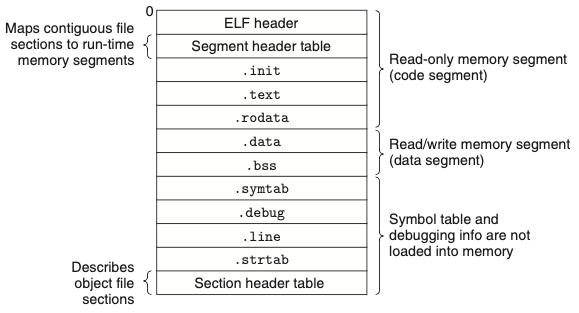

Chapter 07. 링커
- 링킹은 여러 개의 코드와 데이터를 모아서 연결하여 메모리에 로드될 수 있고 실행될 수 있는 한 개의 파이로 만드는 작업이다.
- 링킹은 컴파일 시에 수행할 수 있다.
- 로더에 의해 로드 타임에, 응용프로그램에 의해 실행 시에도 수행될 수 있다.
- 링커는 소프트웨어 개발 시에 중요한 역할: 독립적인 컴파일을 가능하게 하기 때문이다.
- 링커를 배우는 이유
- 큰 프로그램을 작성하는 데 도움이 된다.
- 위험한 프로그래밍 에러를 피할 수 있다.
- 어떻게 언어의 변수 영역 규칙이 구현되었는지 이해하는 데 도움이 된다.
- 다른 중요한 시스템 개념을 이해할 수 있게 된다.
- 공유 라이브러리에 대해 이해할 수 있다.
7.1 컴파일러 드라이버
- 대부분의 컴파일 시스템은 사용자를 대신해서 언어 전처리기, 컴파일러, 어셈블러, 링커를 필요에 따라 호출하는 컴파일러 드라이버를 제공한다.
- 컴파일 순서
- C 전처리기(cpp)로 main.c -> ASCII 중간 파일인 main.i로 번역
- C 컴파일러(cc1)로 main.i -> ASCII 어셈블리 언어 파일인 main.s로 번역
- 어셈블러(as)로 main.s -> 재배치 가능한 바이너리 목적파일인 main.o로 번역
- 링커(ld)로 main.o & sum.o 두개를 연결 -> 실행 가능 목적파일 prog 생성
- 로더라고 부르는 운영체제 내의 함수를 호출 -> 로더는 실행파일 prog의 코드와 데이터를 메모리로 복사하고, 제어를 프로그램의 시작 부분으로 전환한다.

7.2 정적연결
- 정적 링커는 재배치 가능한 목적파일들과 명령줄 인자들을 받아들여 로드될 수 있고 실행될 수 있는 완전히 링크된 실행 가능 목적파일을 생성한다.
- 실행파일을 만들기 위해서 링커는 두 가지 주요 작업을 수행한다.
- 심볼 해석 symbol resolutions: 각각의 심볼 참조를 정확하게 하나의 심볼 정의에 연결하는 것이다.
- 재배치 Relocation: 링커는 섹션들을 각 심볼 정의와 연결시켜 재배치한다.
7.3 목적파일
- 세가지 목적파일이 있다.
- 재배치 가능 목적파일 Relocatable object file: 다른 재구성가능 목적파일들과 결합될 수 있는 바이너리 코드와 데이터를 포함
- 실행 가능 목적파일 Executable object file: 메모리에 직접 복사될 수 있고 실행될 수 있음
- 공유 목적파일 Shared object file: 로드타임 또는 런타임 시에 동적으로 링크되고 로드될 수 있는 목적파일
- 컴파일러와 어셈블러는 재배치 가능 목적파일을 생성, 링커는 실행 가능한 목적파일을 생성
7.4 재배치 가능 목적파일
- 위의 그림은 전형적인 ELF(Executable and Linkable Format) 재배치 가능 목적파일의 포맷이다.
- .text: 컴파일된 프로그램의 머신 코드
- .rodata: printf 문장의 포맷 스트링
- .data: 초기화된 전역변수 및 정적변수
- .bss: 초기화되지 않은 또는 0으로 초기화된 전역변수 및 정적변수
- .symtab: 프로그램에서 정의되고 참조되는 전역변수들과 함수에 대한 정보를 가지고 있는 심볼 테이블
- .rel.text: 다른 목적 파일들과 연결할 때 링커가 수정해야하는 .text 섹션 내 위치들의 리스트
- .rel.data: 전역변수들에 대한 재배치 정보
- .debug: 프로그램 내에서 정의된 지역변수들과 typedef
- .line: 최초 소스 프로그램과 .text 섹션 내 머신 코드 인스트럭션 내 라인 번호들간의 매핑
- .strtab: 섹션 이름들을 위한 스트링 테이블
7.5 심볼과 심볼 테이블
- 재배치 가능 목적 모듈 m은 m에 의해서 정의되고 참조되는 심볼들에 대한 정보를 포함하는 심볼 테이블을 가지고 있다.
- m에 의해 정의되고 다른 모든 모듈들에 의해서 참조될 수 있는 전역 심볼
- 전역
- m에 의해 참조되지만 다른 모듈에 의해 정의된 전역 심볼
- external
- m에 의해서 배타적으로 참조되고 정의된 지역 심볼
- static
- m에 의해 정의되고 다른 모든 모듈들에 의해서 참조될 수 있는 전역 심볼
지역 변수는 런타임에 스택에 의해서 관리되며 링커에는 관심거리가 아니다.
-
.symtab 섹션의 ELF 심볼 테이블은 엔트리들의 배열을 포함하고 있다.
-
테이블 엔트리가 없는 의사 섹션pseudo section 이 존재한다.
- ABS: 재배치해서는 안 되는 심볼
- UNDEF: 정의되지 않은 심볼, 해당 모듈에서는 참조만 되고 다른 곳에서 정의된 심볼들을 위함
- COMMON: 아직 할당되거나 초기화되지 않은 데이터 객체를 위함
COMMON: 초기화하지 않은 전역변수들, .bss: 초기화하지 않은 정적변수들과 0으로 초기화된 전역변수나 정적변수들
7.6 심볼 해석
- 링커는 자신의 입력 재배치 가능 목적파일들의 심볼 테이블로부터 정확히 한 개의 심볼 정의에 각 참조를 연결시켜서 심볼 참조를 해석한다.
- 컴파일러가 현재 모듈에서 정의되지 않은 심볼을 만나면, 다른 모듈에서 정의되어 있다고 가정하고 링커 심볼 테이블 엔트리를 생성하며, 링커가 이것을 처리하도록 남겨둔다.
7.6.1 링커가 중복으로 정의된 전역 심볼을 해결하는 방법
- 링커의 입력은 여러 개의 재배치 가능한 오브젝트 모듈들이다.
- 일부는 지역적이다(정의된 모듈 내에서만 볼 수 있는).
- 일부는 전역적이다(다른 모듈에서도 볼 수 있는).
- 컴파일러는 각 전역 심볼을 어셈블러로 강하게 또는 약하게 보내 심볼 테이블에 묵시적으로 인코딩하게 한다.
- 함수들과 초기화된 전역변수들은 강한 심볼
- 비초기화된 전역변수들은 약한 심볼이다.
- 링커는 중복된 심볼 이름을 처리하기 위해서 다음과 같은 규칙을 사용한다.
- 동일한 이름을 갖는 복수의 강한 심불은 허용 X
- 동일한 이름의 강한 심볼과 다수의 약한 심볼들이 있으면 강한 심볼 선택
- 동일한 이름의 여러 개의 약한 심볼이 있으면 어떤 약한 심볼을 선택해도 관계 X
7.6.2 정적 라이브러리와 링크하기
- 모든 컴파일 시스템은 관련된 객체 모듈들을
정적 라이브러리라고 부르는 한 개의 파일로 패키징하는 매커니즘을 제공한다.- 이 라이브러리는 다음에 링커의 입력으로 제공될 수 있다.
컴파일러 개발자들이 라이브러리의 다양한 함수들을 정적 라이브러리의 혜택 없이 사용자들에게 재공하려면 컴파일러가 직접 함수의 코드를 생성하거나 한 개의 재배치 가능 목적 모듈에 저장하거나 해야한다. 하지만 이런 방법들은 상당한 복잡성을 더하거나 디스크 공간을 극도로 낭비한다. 위와 같은 접근 방법의 단점들을 해겨하기 위해 정적 라이브러리 개념이 개발되었다.
- 위 그림은 정적 라이브러리 연결 시 링커의 동작을 요약한 것이다.
7.6.3 링커가 참조를 해석하기 위해 정적 라이브러리를 사용하는 방법
- 링커는 실행파일을 구성하기 위해 합쳐질 재배치 가능 목적파일들의 집합 E, 미해석 집합 U, 이전 입력파일에서 정의된 심볼 집합 D를 유지한다.
- 입력파일 f에 대해서 링커는 f가 목적파일 또는 아카이브인지 결정한다.
- f가 목적파일이면 f를 E에 추가하고 U와 D를 갱신한다.
- f가 아카이브라면, 링커는 U 안의 미해석 심볼들을 아카이브의 멤버들에 의해 정의된 심볼들과 매칭하려고 시도한다.
- 심볼을 정의한다면 m은 E에 추가되고 U와 D를 갱신한다.
- 위 과정을 U와 D가 더 이상 바뀌지 않는 일정 지점까지 반복 실행한다.
- 스캔을 끝마칠 때 U가 비어있지 않다면 에러 출력, 그렇지 않다면 E에 있는 목적파일들을 합치고 재배치해서 출력 실행파일을 만든다.
위의 알고리즘은 명령줄의 라이브러리와 목적파일의 순서가 중요한 이유가 된다.
7.7 재배치
- 링커가 심볼 해석 단계를 완료하면, 코드 내 각 심볼 참조는 정확히 한 개의 심볼 정의에 연결된다.(입력 모듈 중 하나의 심볼 테이블 엔트리로 연결됨)
- 이후 재배치를 하게 된다. 재배치는 두 단계로 구성된다.
- 섹션과 심볼 정의를 재배치한다.
- 섹션 내 심볼 참조를 재배치한다.
7.7.1 재배치 엔트리
- 어셈블러가 목적 모듈을 생성할 때, 어셈블러는 코드와 데이터가 궁극적으로 메모리 어디에 저장될지 알지 못한다.
- 어셈블러가 위치를 알지 못하는 객체로의 참조를 만나면, 링커에게 이 참조를 어떻게 수정하는지 알려주는 재배치 엔트리를 생성한다.
- 재배치 타입
- R_X86_64_PC32: 32비트 PC-상대주소를 사용하는 참조를 재배치한다.
- R_X86_64_32: 32비트 절대주소를 사용하는 참조를 재배치한다.
7.7.2 심볼 참조의 재배치

- 위의 그림은 링커의 재배치 알고리즘을 위한 의사코드이다.
7.8 실행 가능한 목적파일

- 실행 가능 목적파일의 포맷은 재배치 가능한 목적파일의 포맷과 유사하다.
- .text, .rodata, .data 섹션들이 각자의 최종 런타임 메모리 주소로 재배치되었다.
- _init는 프로그램의 초기화 코드에서 호출한다.
- 실행파일이 완전히 링크(재배치) 되었기 때문에, .rel 섹션을 필요로 하지 않는다.
- ELF 실행파일들은 연속적인 메모리 세그멘트에 매핑된 연속적인 실행 가능 파일들의 덩어리로 메모리에 로드하기 쉽도록 설계되었다.
- 이 매핑은 프로그램 헤더 테이블에 설명되어 있다.
- 모든 세그먼트 s에 대해, 링커는 다음과 같이 시작주소를 선택해야 한다.
- vaddr mod align = off mod align
- align은 프로그램 헤더에 명시된 정렬(2^21 = 0x2000000)이다.
- 이러한 정렬 요구사항은 프로그램이 실행될 때 목적파일의 세그먼트들이 메모리로 효과적으로 전송될 수 있도록 하는 최적화의 결과다.
- 가상메모리가 크기가 큰 연속된 2의 제곱 크기의 바이트 묶음으로 구성되어 있는 방식이기 때문이다.
7.9 실행 가능 목적파일의 로딩
- 실행 가능 목적파일 prog를 실행한다.
- 쉘은 로더loader 라고 알려진 메모리 상주 운영체제 코드를 호출해서 prog를 실행한다.
- 로더는 디스크로부터 실행 가능한 목적파일 내의 코드와 데이터를 메모리로 복사한다.
- 해당 프로그램의 첫 번째 인스트럭션, 즉 엔트리 포인트로 점프해서 프로그램을 실행한다.

- 모든 실행 중인 리눅스 프로그램은 위의 그림과 유사한 런타임 메모리 이미지를 가진다.
7.10 공유 라이브러리로 동적 링크하기
- 정적 라이브러리들은 다른 모든 소프트웨어처럼 관리해야 하고 주기적으로 갱신해야한다.
- 공유 라이브러리들은 정적 라이브러리의 단점들을 극복한다.
- 공유 라이브러리는 런타임이나 로드타임에 임의의 메모리 주소에서 로드되고, 메모리에서 프로그램으로 연결될 수 있는 목적 모듈이다.
- 해당 과정을 동적 링킹이라고 한다.
- 리눅스 시스템에서 .so 확장자, 윈도우 시스템에서 DLL(dynamic link libraries)이라고 부른다.
- 공유 라이브러리들은 두 가지 다른 방법으로 “공유”된다.
- 어떤 주어진 파일 시스템에서, 특정 라이브러리에 대해 정확히 한 개의 .so 파일만이 존재한다.
- .so 파일 내의 코드와 데이터는 이 라이브러리를 참조하는 모든 실행 가능한 목적파일들에 의해 공유된다.
- 메모리에 있는 공유 라이브러리의 .text 섹션은 서로 다른 실행중의 프로세스들에 의해 공유될 수 있다.
- 어떤 주어진 파일 시스템에서, 특정 라이브러리에 대해 정확히 한 개의 .so 파일만이 존재한다.

- 위의 그림은 공유 라이브러리로 동적 링크 과정을 요약한 것이다.
- 기본 아이디어는 링킹의 일부는 실행 가능 파일이 생성될 때 정적으로 수행하고, 프로그램이 로드될 때 링킹 작업을 동적으로 완료하는 것이다.
7.11 Applications 으로부터 공유 라이브러리를 로드하고 링크하기
- 응용프로그램이 돌고 있는 동안에 동적 링커에게 응용프로그램을 컴파일 시에 라이브러리와 링크할 필요 없이 임의의 공유 라이브러리를 로드하고 링크할 것을 요청할 수도 있다.
- 기본 아이디어는 공유 라이브러리에서 동적 콘텐츠를 생성하는 각 함수들을 패키지 하는 것이다.
- 서버는 동적으로 적당한 함수를 로드하고 링크한 뒤에 직접 호출한다.
- 함수는 서버의 주소공간에 캐시된 상태로 남으며, 후속 요청들은 간단한 함수 호출하는 비용만으로 처리될 수 있다.
7.12 위치-독립성 코드(PIC)
- 공유 라이브러리를 사용하는 주목적은 다수의 실행되고 있는 프로세스들이 메모리 내에서 동일한 라이브러리 코드를 공유하도록 하는 것이며, 귀중한 메모리 자원을 절약하는 것이다.
- 한 가지 접근 방법은 공유 라이브러리를 사전에 정해진 주소공간 블록에 할당 하는 것이다.
- 단점 : 사용하지 않을 때도 할당, 메모리 블록들이 중첩되지 않도록 보장해줘야 함
- 한 가지 접근 방법은 공유 라이브러리를 사전에 정해진 주소공간 블록에 할당 하는 것이다.
- 위의 문제점을 피하기 위해 공유 모듈들의 코드 일부분을 컴파일해서 링커에 의해 수정되지 않고도 이들이 메모리 어디든지 로드될 수 있도록 한다.
- 어떠한 재배치 작업 없이 로드될 수 있는 코드는 위치-독립성코드라고 한다.(PIC)
PIC와 GOT, PLT는 아직 이해를 하지 못해 좀 더 찾아보고 공부해야 한다.
7.13 라이브러리 삽입
- 컴파일 삽입
- 링크 삽입
- 런타임 삽입
7.14 요약
- 링킹은 컴파일 시에 정적 링커에 의해 수행될 수 있으며, 로드타임과 런타임에는 동적 링커에 의해 수행된다.
- 목적 파일들은 세 가지 형태로 나타난다.
- 재배치 가능: 정적 링커에 의해 실행 가능 목적파일로 연결
- 실행 가능: 메모리에 로드되고 실행
- 공유: 공유 라이브러리
- 링커의 두 가지 주요 임무
- 전역 심볼들이 유일한 정의에 연결되는 경우 심볼 해석
- 재배치 작업
- 로더는 실행파일의 내용을 메모리로 매핑하고 프로그램을 실행한다.